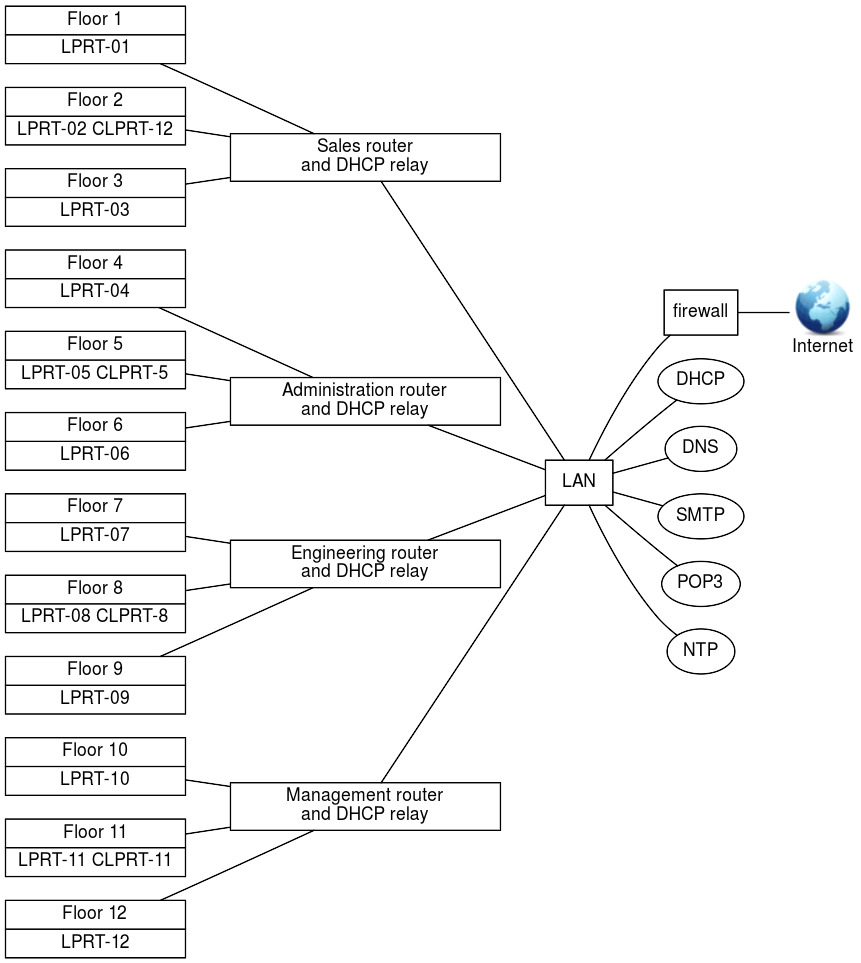

DHCP Configuration (210.1)
DHCP Configuration (210.1)¶
Candidates should be able to configure a DHCP server. This objective includes setting default and per client options, adding static hosts and BOOTP hosts. Also included is configuring a DHCP relay agent and maintaining the DHCP server.
Key Knowledge Areas¶
-
DHCP configuration files, terms and utilities
-
Subnet and dynamically-allocated range setup
Terms and Utilities¶
-
dhcpd.conf -
dhcpd.leases -
/var/log/daemon.logand/var/log/messages -
arp -
dhcpd -
radvd -
radvd.conf
What is DHCP?¶
The "Dynamic Host Configuration Protocol" (DHCP) is a protocol that allows computers to get configuration information about the network from the network. DHCP addresses are "leased" from servers to clients for a period of time. There is a separate protocol for assigning IPv6 addresses called DHCPv6, although the "Neighbour Discovery Protocol" (NDP) better fits this purpose.
The process of requesting and assigning addresses works as follows:
-
When a computer starts, it sends a request to the network.
-
Any DHCP servers that receive this request decide what address and other configuration options to assign to the client. This is typically based on things like: which network the request arrived on, or the MAC address of the interface that sent the request.
-
Each server sends a packet which offers to assign the address to the client.
-
The client decides which offer to accept, and sends a message to the server confirming the choice.
-
The server acknowledges that it has recorded this address.
Amongst the most commonly used configuration items are: ip-address,
host-name, domain-name, subnet-mask, broadcast-address,
routers and domain-name-servers.
The information is requested by a DHCP client and provided by a DHCP
DHCPServer DHCPClient server. By default, the server listens for
requests on udp port 67 and 67 answers through udp port 68, but it can
be told to listen to another 68 port instead with the -p option. The
DHCP server will then answer through an udp port with a number one
higher than the port it listens to.
Hosts using IPv6 are actually capable of assigning themselves link-local
IP addresses using stateless autoconfiguration. DHCPv6 or NDP may be
used to assign additional globally unique addresses and other
configuration parameters. NDP is described in further detail in the
section on radvd
The web-site Resources for DHCP contains a lot of (pointers to) information on the DHCP protocol, including RFC's.
How is the server configured?¶
dhcpd The configuration of the DHCP server, dhcpd, is done
DHCPdhcpd.conf by means of its configuration file /etc/dhcpd.conf.
The elements that can be used in a configuration file are: (global) parameters, shared networks, subnets, groups and hosts.
What are (global) parameters?¶
Parameters can be seen as variables that get assigned a value and are DHCPGlobal Parameters passed from the server to the client. Some parameters start with the option keyword and some do not. Parameters that do not start with the option keyword are either parameters that control the behaviour of the DHCP server or are parameters that are optional in the DHCP protocol.
The difference between "normal" parameters and "global" parameters lies
purely in the scope of the parameters. DHCPNormal Parameters If, for
instance, the DNS is always the same, it is pointless to add a
domain-name-servers parameter-definition statement to every
network-definition statement. By assigning the domain-name-servers
parameter a value at the beginning of the configuration file, the
parameter becomes a global parameter and its value becomes the default
value for that parameter.
The value of a global parameter can be overridden by assigning it another value in subsequent sections.
What is a shared-network declaration?¶
A shared-network declaration is used if there are multiple subnets DHCPshared network on the same physical network. Parameters that are the same for all the subnets belonging to the shared-network can be defined once above the subnet-declarations within the shared-network declaration that encompasses those subnet-declarations.
What is a subnet declaration?¶
A subnet-declaration is used to define a network segment. Parameters DHCPsubnet declaration that only apply to the subnet in question are defined within the subnet-declaration.
A subnet-declaration must contain a range statement that defines the IP-addresses the DHCP-server can give to clients on that subnet.
What is a group declaration?¶
A group-declaration is used to group other declarations, including DHCPgroup declaration group-declarations, that have a number of properties in common so that the common properties only have to be be specified once in stead of for every declaration.
What is a host declaration?¶
A host declaration is used to set properties for a specific client. DHCPhost declaration The client identifies itself to the DHCP server by one of its unique properties such as its NIC address or its client-identifier. NIC address
Example¶
Consider a firm which has four departments: Sales, Administration, Engineering and Management. All departments are located in the same building and each department has three floors to its disposal.
On each floor, there are up to 200 workstations and one laser printer (LPRT-xx). Furthermore each department has its own colour laser-printer (CLPRT-xx) located on the middle floor. The printers can only be used by users of the department the printers belong to.
All users obtain an IP-address from the company's DHCP-server and must be able to reach the company's DNS-server and NTP-server. All users get their mail using the POP3 protocol, send their mail using the SMTP protocol and read their news using the NNTP protocol.
A graphical representation of the company's network is shown below:

The network architecture¶
Assuming that the IP range 21.31.x.x has been assigned to the company and that each department has its own network (determined by the highest four bits of the third octet; in other words: the netmask used is /20 or 255.255.240.0), the subnets could be set up as follows: Table 10.1. The first two octets are 21.31
| Dept. | Floor | IP range | Router | Description |
|---|---|---|---|---|
| 0001 | 0001 | 21.31.17.0 - 21.31.17.255 | Sales floor #1 | |
| 0001 | 0010 | 21.31.18.0 - 21.31.18.255 | 21.31.17.1 | Sales floor #2 |
| 0001 | 0011 | 21.31.19.0 - 21.31.19.255 | Sales floor #3 | |
| 0010 | 0100 | 21.31.36.0 - 21.31.36.255 | Administration #4 | |
| 0010 | 0101 | 21.31.37.0 - 21.31.37.255 | 21.31.36.1 | Administration #5 |
| 0010 | 0110 | 21.31.38.0 - 21.31.38.255 | Administration #6 | |
| 0011 | 0111 | 21.31.55.0 - 21.31.55.255 | Engineering floor #7 | |
| 0011 | 1000 | 21.31.56.0 - 21.31.56.255 | 21.31.55.1 | Engineering floor #8 |
| 0011 | 1001 | 21.31.57.0 - 21.31.57.255 | Engineering floor #9 | |
| 0100 | 1010 | 21.31.74.0 - 21.31.74.255 | Management floor #10 | |
| 0100 | 1011 | 21.31.75.0 - 21.31.75.255 | 21.31.74.1 | Management floor #11 |
| 0100 | 1100 | 21.31.76.0 - 21.31.76.255 | Management floor #12 |
The network services available to workstations¶
The workstations on the company's network obtain their IP-address and the IP-addresses of the available network services from the company's DHCP-server via the department's DHCP-relay which also functions as a router.
Subnet-independent Services¶
Subnet-independent services are the services that are available to all workstations on the company's network regardless the subnet they are on. The table below shows those services and their fixed IP-addresses.
| Service | Description | IP-address | Host name |
|---|---|---|---|
| DHCP | DHCP-server | 21.31.0.1 | dhcp.company.com |
| DNS | DNS | 21.31.0.2 | dns.company.com |
| SMTP | SMTP-server | 21.31.0.3 | smtp.company.com |
| POP3 | POP3-server | 21.31.0.4 | pop3.company.com |
| NEWS | NNTP-server | 21.31.0.5 | news.company.com |
| NTP | NTP-server | 21.31.0.6 | ntp.company.com |
Subnet dependent services¶
Subnet-dependent services are the services that are only available to the workstations on the same subnet as the service. The table below shows those services and their fixed IP-addresses.
| Department | Service | Description | IP-address | Name |
|---|---|---|---|---|
| Router | Sales Router floor #2 | 21.31.17.1 | rtr-02.company.com | |
| Printer | Laser Printer floor #1 | 21.31.17.2 | lprt-01.company.com | |
| Sales | Printer | Laser Printer floor #2 | 21.31.18.2 | lprt-02.company.com |
| Printer | Laser Printer floor #3 | 21.31.19.2 | lprt-03.company.com | |
| Printer | Color Laser Printer floor #2 | 21.31.18.3 | clprt-02.company.com | |
| Router | Administration Router floor #5 | 21.31.36.1 | rtr-05.company.com | |
| Printer | Laser Printer floor #4 | 21.31.36.2 | lprt-04.company.com | |
| Administration | Printer | Laser Printer floor #5 | 21.31.37.2 | lprt-05.company.com |
| Printer | Laser Printer floor #6 | 21.31.38.2 | lprt-06.company.com | |
| Printer | Color Laser Printer floor #5 | 21.31.37.3 | clprt-05.company.com | |
| Router | Engineering Router floor #8 | 21.31.55.1 | rtr-08.company.com | |
| Printer | Laser Printer floor #7 | 21.31.55.2 | lprt-07.company.com | |
| Engineering | Printer | Laser Printer floor #8 | 21.31.56.2 | lprt-08.company.com |
| Printer | Laser Printer floor #9 | 21.31.57.2 | lprt-09.company.com | |
| Printer | Color Laser Printer floor #8 | 21.31.56.3 | clprt-08.company.com | |
| Router | Management Router floor #11 | 21.31.74.1 | rtr-11.company.com | |
| Printer | Laser Printer floor #10 | 21.31.74.2 | lprt-10.company.com | |
| Management | Printer | Laser Printer floor #11 | 21.31.75.2 | lprt-11.company.com |
| Printer | Laser Printer floor #12 | 21.31.76.2 | lprt-12.company.com | |
| Printer | Color Laser Printer floor #11 | 21.31.75.3 | clprt-11.company.com |
Building the DHCP-server's configuration file¶
The information needed to be able to build a configuration file has already been gathered in the previous sections when the network topology was devised.
In this section the actual configuration file /etc/dhcpd.conf will be
filled with the necessary information.
The global parameters for services¶
Global parameters are put at the top of the configuration file: DHCPoption DHCPdomain-name-servers DHCPsmtp-server DHCPpop-server DHCPnntp-server
1 2 3 4 5 6 7 8 9 10 | |
Another way to do this is by using domain names. A single domain name must resolve to a single IP-address. Using domain names, you would put the following entries in the configuration file:
1 2 3 4 5 6 7 8 9 10 | |
The company's shared-networks and subnets¶
As has been discussed in the previous sections, there are four different networks, one for each department and there are twelve different IP-address ranges, one for each floor. Furthermore, each network has its own router and printers.
This translates into four shared-networks each having their own netmask and broadcast-address and encompassing three IP-address ranges.
The netmask is an IP-address used to determine the network a workstation, or some other network device that uses an IP-address, is on. A netmask has 1's in the bit-positions that are the same for all network devices in that network and 0's in the other positions. Since all the subnets on a department's shared-network are on the same physical network, the distinction is made on the shared-network level, not on the floor level. The floor level has been coded into the IP-address (low-nibble of the third octet) to prepare for the planned instalment next year of one router per floor in stead of one router per department. The netmask is calculated as follows:
1 2 3 4 5 6 7 8 9 10 11 12 13 14 | |
Using a netmask of 255.255.240.0, the network an IP-address is on can be determined. This is done by AND-ing the IP-address with the netmask. To determine on which of the four networks a workstation with IP-address 21.31.57.105 is, the following calculation is performed:
1 2 3 | |
The IP-address 21.31.57.105 is on the 21.31.48.0 network, which is the Engineering-network.
The broadcast-address is used to send packets to every workstation broadcast on a network. A broadcast-address differs per network and can be determined by replacing all bits reserved/used for the host address (as denoted by the subnet mask) with 1's.
Another way of determining the broadcast-address is to take the inverse of the netmask, in this case 0.0.15.255, and then OR the result with the network address:
1 2 3 4 5 6 7 8 9 10 11 12 13 14 15 | |
The broadcast-address for the network an IP-address is on can be determined by OR-ing the IP-address with the inverse-netmask. For a workstation with IP-address 21.31.57.105, the broadcast-address can be calculated as follows:
1 2 3 | |
The IP-address 21.31.57.105 belongs to a network that has broadcast-address 21.31.63.255, which is correct since the IP-address is on the Engineering-network.
To tell the DHCP-server what IP-addresses to give-out per subnet, a range statement must be added to the subnet. Is this example the IP-addresses 21.31.x.0 to 21.31.x.10 and 21.31.x.211 to 21.31.x.255 on every floor are reserved for printers and routers. This means that for every subnet the range statement is:
1 | |
Where "x" depends on the department and the floor.
To implement this structure, the following lines are added to the configuration-file:
1 2 3 4 5 6 7 8 9 10 11 12 13 14 15 16 17 18 19 20 21 22 23 24 25 26 27 28 29 30 31 32 33 34 35 36 37 38 39 40 41 42 43 44 45 46 47 48 49 50 51 52 53 54 55 56 57 58 59 60 61 62 63 64 65 66 67 68 69 70 71 72 73 74 75 76 77 78 79 | |
Static hosts¶
A static host is a host that always gets the same IP-address from the DHCP-server in opposite to dynamic hosts which get their DHCPStatic Host IP-address from a range of IP-addresses.
Obviously, the DHCP-server must be able recognize the host to be able to
conclude that the host has been defined as a static one in the
DHCP-server's configuration file. This can be done by using the
dhcp-client-identifier option or by using the DHCPclient identifier
hardware ethernet option. DHCPethernet address
The dhcp-client-identifier is send to the server by the client (host)
and must uniquely identify that client. This is not safe because there
is no way to be sure that there isn't a second client that uses the
same identifier.
The hardware ethernet option causes the match to be done on the
client's NIC-address which is world-wide unique.
If the client does not send a dhcp-client-identifier, then the
NIC-address is used to identify the client.
There are two designers, working for the Engineering department, that come to the office sometimes to get a hardcopy of their designs in colour. These designers are called "luke" and "leah" and they bring their laptops and connect them to the Engineering-network. The host names of their machines will be "luke" and "leah".
To make this so, the administrator has added the following lines to the DHCP-server's configuration file:
1 2 3 4 5 6 7 8 9 10 11 12 13 14 15 16 17 18 19 20 | |
Static BOOTP hosts¶
This is a special static host. If luke and leah's laptops were BOOTP-clients, the administrator could have added the following DHCPBOOTP lines to the DHCP-server's configuration file:
1 2 3 4 5 6 7 8 9 10 11 12 13 14 15 16 17 18 19 20 21 22 23 24 25 26 | |
The filename option states the name of the file to get from the server
defined in the next-server option. If the next-server is omitted,
the server to get the file from is the DHCP-server. The server-name
can be used to send the name of the server the client is booting from to
the client.
For information on the valid options, consult the dhcp-options man page
(man dhcp-options) and the dhcpd.conf man page (man dhcpd.conf).
Controlling the DHCP-server's behaviour
Leases¶
A lease is the amount of time a client may use the IP-address it got from the DHCP-server. The client must refresh the lease periodically because the IP-address can be given to another client if the lease is expired. Normally, a client will be given the same IP-address if the lease is refreshed before it expired.
The option max-lease-time is used to specify the DHCPmax-lease-time
maximum amount of time in seconds that will be assigned to a lease if
the client asks for a specific expiration time.
The option default-lease-time is used to specify the
DHCPdefault-lease-time amount of time in seconds that will be assigned
to a lease if a client does not ask for a specific expiration time.
The DHCP-server keeps a database of the leases it has issued in the file
/var/dhcp/dhcpd.leases. If this file is DHCPdhcpd.leases empty, this
is probably caused by the fact that you have only defined static hosts
in the DHCP-server's configuration file and you haven't used any
range statements. On the DHCP clients the leased IP addresses are kept
in the file dhclient.leases.
Interfaces the DHCP-server listens on¶
Unless you specify otherwise, dhcpd will listen on all interfaces
for a dhcp request. If you only want to serve requests on eth0 for
instance, you can tell this to the daemon by including the parameter on
the command line that starts the daemon.
Reloading the DHCP-server after making changes¶
This is done as follows: DHCPreload
1 | |
This will stop the running daemon, wait two seconds, then start a new
daemon which causes /etc/dhcpd.conf to be read again.
Logging¶
By default the DHCP server logs using syslogd, although many Linux
distributions have exchanged syslogd for Systemd's journald. Logging is
configured in the dhcpd.conf file using the log-facility keyword. This
statement causes the DHCP server to do all of its logging on the
specified log facility once the dhcpd.conf file has been read. By
default the DHCP server logs to the daemon facility. Possible log
facilities include auth, authpriv, cron, daemon, ftp, kern, lpr, mail,
mark, news, ntp, security, syslog, user, uucp, and local0 through
local7. Not all of these facilities are available on all systems, and
there may be other facilities available on other systems. In addition to
setting log-facility value, you may need to modify your syslog.conf file
to configure logging of the DHCP server. For example, you might add a
line like this:
1 | |
The syntax of the syslog.conf file may be different on some operating
systems - consult the syslog.conf manual page to be sure. To get syslog
to start logging to the new file, you must first create the file with
correct ownership and permissions (usually, the same owner and
permissions of your /var/log/messages or /usr/adm/messages file should
be fine) and send a SIGHUP to syslogd. Note that journald does not log
to a plaintext file; it uses a binairy format instead. To view messages
specific for dhcpd, you have to filter these out using the
journalctl command.
DHCP-relaying
What is DHCP-relaying?¶
In our earlier example there is one DHCP-server for the whole DHCPrelaying network and there are routers between the clients and that server.
If a client would be able to connect to the DHCP-server through a router, the DHCP-server would not see the NIC-address of the client but the NIC-address of the router. This would mean that a static host for instance, could not be recognized by its hardware address.
A DHCP-relay agent, such as dhcrelay provides a dhcrelay means for
relaying DHCP and BOOTP requests from one of the subnets to the
company's DHCP-server.
If you need more information, consult The Internet Consortium DHCP Homepage.
The DHCP Relay Agent listens for DHCP and BOOTP queries and responses. When a query is received from a client, dhcrelay forwards it to the list of DHCP servers specified on the command line. When a reply is received from a server, it is broadcast or unicast (according to the relay agent's ability or the client's request) on the network from which the original request came. If no interface names are specified on the command line dhcrelay will identify all network interfaces, elimininating non-broadcast interfaces if possible, and attempt to configure each interface.
Please consult the man page (man dhcrelay) for further details.
Assigning addresses in IPv6 networks
radvd The previous paragraphs were mainly concerned with automatic IP
assignment in IPv4 networks. Networks using IPv6 often use the "Neighbor
Discovery Protocol" to obtain an IP address that is valid for the
network. In Linux, this protocol is handled by the "Router
Advertisement" (radvd) daemon.
The process for IPv6 address assignment works a bit different from IPv4 networks, because IPv6 hosts always assign link-local addresses for IPv6-enabled interfaces automatically, without any help from external hosts. NDP builds upon this stateless autoconfiguration process by distributing "prefixes" instead of addresses. Using the prefix (which is basically the network part of an IP address) obtained through NDP, hosts can assign valid IPv6 addresses to themselves. So in contrast with the DHCP daemon on IPv4 networks, NDP has no concept of IP pools and leases.
Instead of requesting an address, clients send "router sollicitation"
requests to obtain a valid IPv6 prefix. The radvd daemon responds to
these requests with router advertisement messages. These messages
contain the routing prefix used on the link, the maximum transmission
unit (MTU), and the address of the responsible default router.
The radvd daemon is configured by /etc/radvd.conf, which has to contain at least the interface the
daemon should listen on and the prefix it has to serve. Additionally,
radvd can periodically re-advertise its prefixes to hosts on the same
network. If you wish, you can also configure the lifetime of the IPv6
addresses that hosts configure for themselves.
A typical radvd.conf would look similar to the following:
1 2 3 4 5 6 7 8 9 10 | |